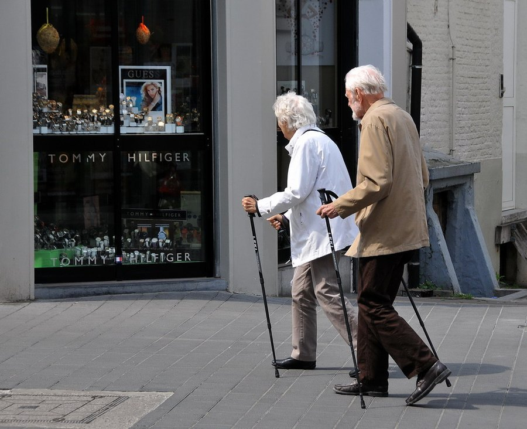

Low-Impact Exercises for Bad Knees: What Actually Helps
Painful knees don't mean you have to stop moving. They mean you need to move differently, in ways that build strength instead of grinding the joint further.

Key takeaways
- Low-impact doesn't mean low-effort. Swimming, cycling and the elliptical can build real strength and endurance without the jarring load of running or jumping.
- Weak muscles, not just worn cartilage, drive a lot of knee pain. Stronger quads, hamstrings and hips take pressure off the joint itself.
- Water workouts remove nearly all impact while still letting you train against resistance.
- A little soreness is normal; sharp or lingering pain is not. Learning that difference matters more than any single exercise choice.
- Consistency beats intensity. Three or four short sessions a week outperform one hard workout that triggers a flare-up.
The best low-impact exercises for bad knees are swimming, water aerobics, stationary cycling, the elliptical, and walking on flat ground, paired with strength work for the quads, hamstrings and hips. These keep the joint moving and build supporting muscle without the repeated jarring force of running, jumping or deep squatting.
If your knees ache going up stairs or after a short walk, the instinct to stop exercising altogether feels reasonable. It's also usually the wrong move. Inactive joints tend to get stiffer, and the muscles around them get weaker, which often makes pain worse over time, not better. The fix isn't pushing through pain. It's choosing movement that doesn't load the joint the way running or jumping does.
What counts as a low-impact exercise for bad knees?
Low-impact means at least one foot stays in contact with the ground, or the water, at all times, so there's no landing force traveling up through the joint. Walking, swimming, cycling and using an elliptical all qualify. Running, jumping rope, basketball and most team sports don't, because they involve repeated impact every time a foot strikes the ground.
That distinction matters because it's the landing, not the movement itself, that tends to aggravate a painful knee. A cyclist's knee bends through a similar range as a runner's, but without the jolt of impact, so cycling is usually far more tolerable for someone with joint pain.
Why does high-impact exercise hurt bad knees more?
Every time a foot hits the ground during running or jumping, the knee absorbs a force several times body weight in a fraction of a second. Healthy cartilage handles that load fine. Cartilage that's thinned by osteoarthritis, or a knee recovering from injury, often can't, and the joint responds with inflammation and pain. Swap that landing force for the smooth, continuous motion of a bike pedal or a pool stroke, and the same muscles get worked with a fraction of the stress on the joint surface.
What are the best low-impact exercises for bad knees?
No single exercise works for everyone, since knee pain has different causes and different trigger points. The table below is a reasonable starting list, roughly ordered from gentlest to more demanding.
| Exercise | Impact on the knee | Good for |
|---|---|---|
| Water aerobics / pool walking | Very low; buoyancy supports most body weight | Severe pain, early recovery, arthritis flares |
| Swimming | Very low | Full-body conditioning with almost no joint load |
| Stationary cycling | Low | Building leg strength and endurance |
| Elliptical machine | Low | A walking or running feel without impact |
| Walking on flat ground | Low to moderate | Daily movement, general mobility |
| Bodyweight strength work | Low (when modified) | Building the muscle that actually supports the knee |
| Yoga or tai chi | Low | Flexibility, balance, and gentle range of motion |
Is walking good for bad knees?
For most people, yes, especially on flat, even surfaces. Walking is weight-bearing, so it still loads the joint somewhat, but the load is gradual rather than a sudden impact. Start with shorter sessions on a track or paved path rather than trails with loose gravel or steep hills, which demand more from the knee with every step. A cushioned shoe and a steady, unhurried pace make a bigger difference than most people expect.
If stairs specifically are the problem, our guide to knee pain when climbing stairs breaks down why that particular movement tends to hurt more than flat walking.
Does cycling help or hurt knee pain?
It usually helps, with one caveat: seat height. A seat set too low forces the knee to bend more sharply with each pedal stroke, which can aggravate pain under the kneecap. Raise the seat so your leg is nearly, but not fully, straight at the bottom of the pedal stroke. Start with low resistance and shorter rides, then build up distance before adding intensity. A recumbent bike, where you sit lower and lean back, can feel more comfortable for some people with significant pain.
Should you do strength training with bad knees?
Yes, and it's arguably the most important piece of this whole approach. The quadriceps, hamstrings, glutes and hip muscles all help control how the knee moves and how much force reaches the joint surface. Stronger muscles in that chain tend to mean a more stable, better-supported knee, even if the cartilage itself hasn't changed.
Good starting moves include straight-leg raises, wall sits held for short periods, seated leg extensions with light resistance, and glute bridges. These build strength without putting the knee through a deep, loaded bend. Once those feel manageable, partial squats and step-ups on a low step add more challenge. A physical therapist can tailor the progression to your specific pain pattern, which is worth the visit if you're not sure where to start.
What about yoga and stretching for knee pain?
Gentle yoga and regular stretching won't build much strength on their own, but they help keep the muscles around the knee, especially the hamstrings and calves, from getting tight in ways that pull on the joint. Poses that put heavy, prolonged pressure directly on a bent knee, like deep kneeling positions, are worth modifying or skipping. A slower style, with props and modifications, tends to work better for painful knees than a fast-paced class.
How much exercise is too much for bad knees?
There's no fixed number of minutes that applies to everyone, but the pattern to watch is simple: some mild, short-lived soreness after a session is normal, while pain that's sharp, that causes swelling, or that's still bothering you the next morning is a sign to scale back. Three to five sessions a week of 20 to 40 minutes is a reasonable target for most people managing knee pain, built up gradually over several weeks rather than jumped into all at once.
Rest days matter here too. A joint that's irritated needs recovery time between sessions just as much as it needs movement, and alternating a harder day with an easier one, like swimming one day and a short walk the next, tends to work better than the same intense session every day.
Can supplements or joint health habits help alongside exercise?
Exercise does the heaviest lifting, but a few supporting habits are worth knowing about. Maintaining a weight that's comfortable for your frame measurably reduces the load on the knee with every step, since each pound of body weight translates into several pounds of force across the joint during walking. Some people also look into collagen or glucosamine and chondroitin, two of the most studied joint supplements; our guides to collagen for joint pain and glucosamine and chondroitin cover what the evidence actually supports for each. Morning stiffness is its own pattern worth understanding too; see our piece on morning joint stiffness for more on that.
When should you see a doctor about knee pain?
See a doctor before starting a new routine if you have significant swelling, a knee that locks or gives way, pain that wakes you at night, or pain following a specific injury. A doctor or physical therapist can also help rule out causes that need a different approach than general low-impact exercise, and can build a plan suited to your specific knee rather than a generic list like this one. For everyday aches that come and go with activity, the exercises above are a reasonable, low-risk place to start. For anything more serious, get it checked first.
Frequently asked questions
Can exercise reverse knee arthritis?
No, exercise can't reverse existing cartilage damage. What it can do is strengthen the muscles that support the joint, which often reduces pain and improves function even when the underlying arthritis stays the same.
Is it normal for knees to ache a little during low-impact exercise?
Mild, dull discomfort that fades within an hour or two is usually fine and common when starting a new routine. Sharp pain, swelling, or soreness that lingers into the next day is a signal to scale back and, if it keeps happening, check in with a doctor or physical therapist.
What shoes are best for exercising with bad knees?
Supportive athletic shoes with good cushioning and a snug, stable fit matter more than any specific brand. Replace walking or cross-training shoes every 300 to 500 miles, since worn-out cushioning shifts more shock up into the knees.
How long before low-impact exercise reduces knee pain?
Many people notice less stiffness within two to four weeks of consistent movement. Meaningful strength gains that take real pressure off the joint usually take six to eight weeks of regular sessions.
Does losing weight really take pressure off painful knees?
Yes, and the effect is bigger than most people expect. Each pound of body weight adds roughly four pounds of force on the knee during walking, so even a modest weight loss can meaningfully lower the load on the joint with every step.
Is an elliptical machine okay for bad knees?
For many people, yes. The elliptical keeps feet in contact with the pedals the whole time, which removes impact, though the fixed stride path still bends the knee through a range some people with severe pain find uncomfortable. Start on low resistance and a short stride length to test it.
Should you keep exercising through a knee flare-up?
Scale down rather than stop completely. Gentle range-of-motion work and short walks tend to help more than total rest during a flare, but skip anything that sharply increases pain and give the joint a few days of lighter activity before building back up.
Related: Knee pain when climbing stairs · Collagen for joint pain · Glucosamine and chondroitin for joints · Morning joint stiffness · Joints & Mobility hub
Image: FaceMePLS from The Hague, The Netherlands / Wikimedia Commons / CC BY 2.0